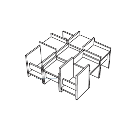
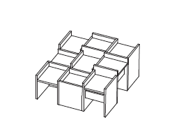
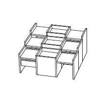
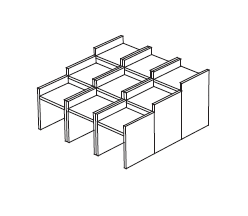
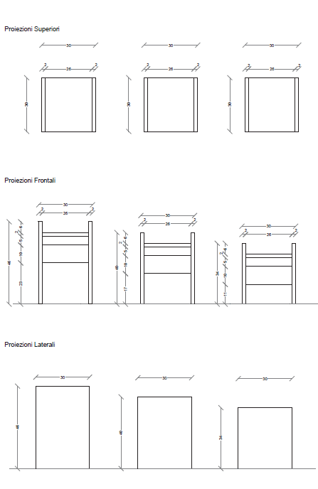
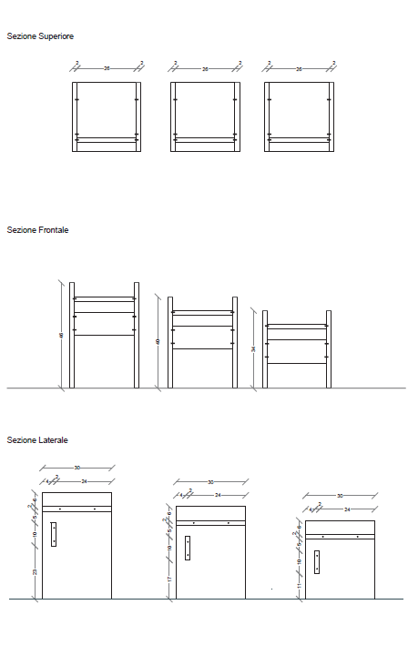

{kind=link}
{kind=link}
{kind=link}
{kind=link}
{kind=link}
{kind=link}
{kind=link}
{kind=link}






Il progetto nasce da una riflessione sul ruolo della natura e della semplicità nel design contemporaneo. A partire dall'analisi di maestri come Le Corbusier, William Morris, Tadao Ando, Mies van der Rohe e Alvar Aalto, emerge come l'elemento naturale non sia solo decorativo, ma parte integrante dell'esperienza abitativa, capace di generare benessere ed emozione.
La ricerca si sviluppa inoltre attraverso lo studio di oggetti iconici del design moderno, caratterizzati da semplicità, modularità e versatilità d'uso. Prodotti come la Panca Aalto 153A, la Side Table 915 o lo Sgabillo Ulm evidenziano un approccio progettuale essenziale, dove forma, funzione e materiale convivono in equilibrio. Allo stesso modo, le soluzioni modulari di De Padova sottolineano l'importanza della componibilità e della libertà d'uso. Un ruolo centrale è affidato al legno, materiale vivo, resistente e sostenibile, reinterpretato attraverso tecnologie contemporanee come il compensato, che consente maggiore flessibilità formale e precisione costruttiva.
Su queste basi nasce il progetto di un espositore per piante da interno che unisce minimalismo geometrico e richiamo
alla natura.
La struttura è composta da nove piedistalli in compensato, caratterizzati da altezze differenti
(46 cm, 40 cm e 34 cm), che evocano il ritmo irregolare della vegetazione naturale. Le forme semplici, basate su volumi
quadrati e rettangolari, generano una composizione pulita ed equilibrata, lasciando al fruitore la libertà di organizzare
gli spazi espositivi in modo personale e dinamico.
L'insieme si configura come una struttura modulare e flessibile, in cui il gioco di pieni e vuoti crea prospettive sempre diverse. I piedistalli, di dimensioni 30×26 cm e spessore 2 cm, sono collegati tramite tasselli in legno di faggio, mentre un supporto strutturale garantisce stabilità all'intero sistema.
Il progetto si propone quindi come un oggetto d'arredo essenziale ma espressivo, capace di valorizzare il rapporto tra design e natura, trasformando un elemento funzionale in un'esperienza visiva e compositiva.





